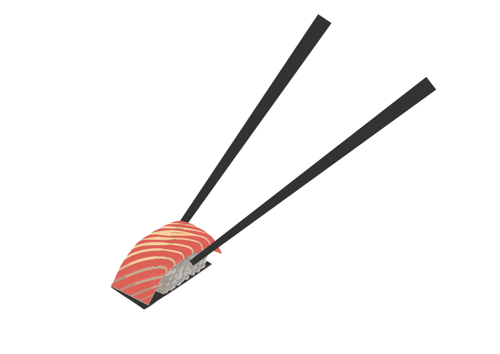

<section id="container-principal">
    <article id="container-left">
        <h1>C'est l'heure des sushis !</h1>
        <a id="button" routerLink="/menu">Découvrez nos menus</a>
    </article>
    <article>
        
    </article>
</section>